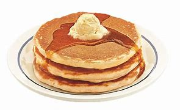

Jay's Infamous Pancake Recipe
Nothing beats a stack of fluffy, golden, totally homemade pancakes.They’re the ultimate breakfast with butter
and maple syrup, especially when you can flip and serve them up in about 20 minutes.

The ingredients need in this recipe are:
∙ 1 1/2 cups if all-purpose flour
∙ 1 tablespoon of baking powder
∙ 1/8 teaspoon of freshly ground nutmeg
∙ 2 large eggs, at room temperature
∙ 1 1/4 cups of milk, at room temperature
∙ 1/2 teaspoon of pure vanilla extract
∙ 3 tablespoons of unsalted butter
You can find the instructions below:
1. In a large bowl, whisk together the flour, sugar, baking powder, salt, and nutmeg.
2. In another bowl, beat the eggs and then whisk in the milk and vanilla.
3. Melt the butter in a large cast iron skillet or griddle over medium heat.
4. Whisk the butter into the milk mixture. Add the wet ingredients to the flour mixture, and whisk until a
thick batter is just formed.
5. Keeping the skillet at medium heat, ladle about 1/4 cup of the batter onto the skillet, to make a pancake.
Make 1 or 2 more pancakes, taking care to keep them evenly spaced apart. Cook, until bubbles break the surface of the pancakes,
and the undersides are golden brown, about 2 minutes. Flip with a spatula and cook about 1 minute more on the second side. Serve
immediately or transfer to a platter and cover loosely with foil to keep warm. Repeat with the remaining batter, adding more butter
to the skillet as needed.
6. Procedure for adding fruit to pancakes: Once the bubbles break the surface of the pancakes, scatter the surface with
sliced or diced fruit, or chocolate chips, nuts, etc. Flip with a spatula and cook for 1 minute more, being careful not to burn toppings.